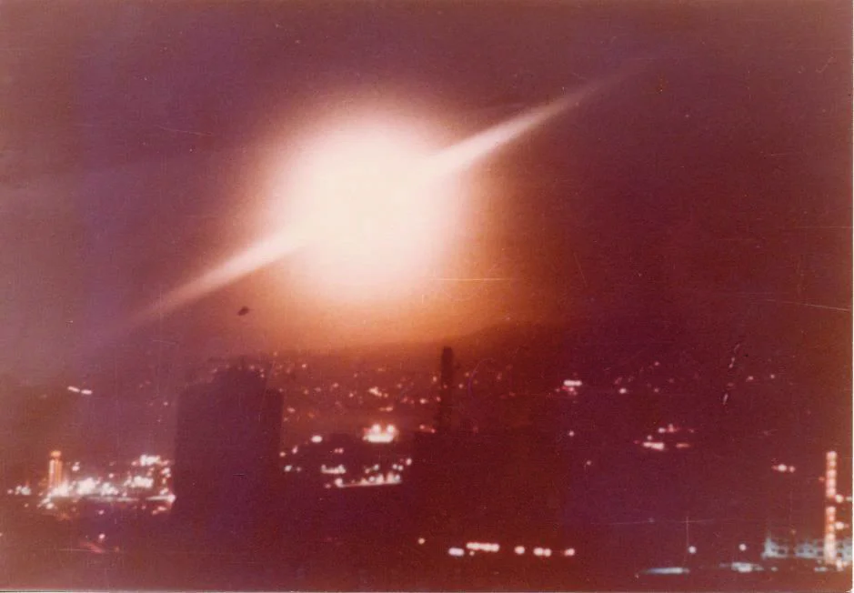
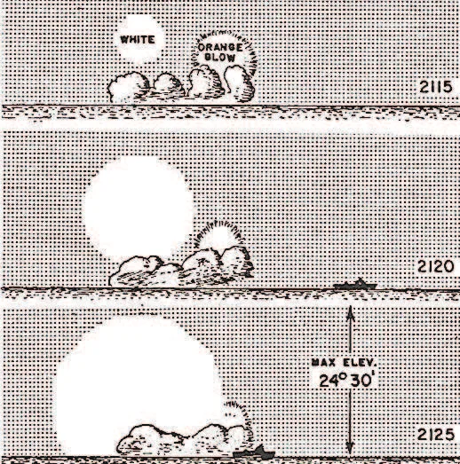
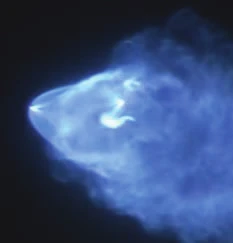
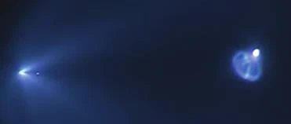
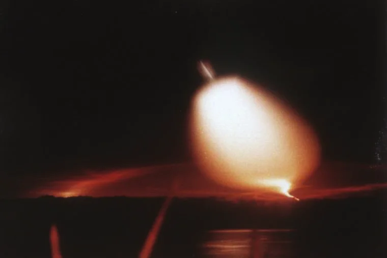

“Tell me, do you not see that knight coming towards us on a speckled gray steed, who has on his head a helmet of gold?” “What I see and distinguish,” replied Sancho, “is only a man on a gray ass like mine, who has something shining on his head. […]” [Don Quijote] told Sancho to pick up the helmet, and he took it in his hands and said: By God, the barber’s basin is good, and worth a real of eight if it is worth a maravedí. Miguel de Cervantes El ingenioso hidalgo Don Quijote de la Mancha I, 21 [] Barcelona, Spain: Labor,
The reliability of UFO eyewitness accounts is far from being sufficient proof that some unknown phenomenon exists, let alone an extraterrestrial presence on Earth. This article offers some considerations on the psychology of perception necessary to evaluate such testimonies in general, and, in particular, deals with two relevant examples drawn from the international literature: observations made in the Canary Islands on , and .
The goal of classical ufological research should be to ascertain whether UFOs are–as Don Quixote discovered–merely barbers’ basins and not the helmets of mysterious knights-errant. But most ufologists prefer to believe such mundane objects could possibly lie at the core of astonishing eyewitness testimony. However, “barbers’ basins” are a category that includes Venus, airplanes, fireballs, space debris re-entries and the like.
Perhaps this sort of ufology should have ridden off into the sunset when the Condon committee published its discouraging conclusions in :
One’s judgment, conviction or belief about the actual identity and meaning of something, that is, one’s cognition of it, are very much affected by mental set, expectation and suggestion. Every observer is ready to perceive reality in a certain way. The observer’s sets and expectations arise from his experiences, opinions and beliefs, including those derived from suggestion. The observer who looks for faces in cloud patterns can find them easily.
No report is an entirely objective, unbiased, and complete account of an objective and distal event. Every UFO report contains the human element; to an unknown but substantial extent it is subject to the distorting effects of energy transmission through an imperfect medium, of the lack of perfect correlation between distal object and proximal stimulus, and of the ambiguities, interpretations, and subjectivity of sensation, perception and cognition.
In fact, what M. Wertheimer states in the above passage was nothing new in the field of the psychology of perception. The only novelty was that such considerations were coming from a governmental body. The inevitable conspiratorial suspicions that followed, present in the history of ufology since the first official research projects (Sign and Grudge), were reinforced when the University of Colorado shut down the debate on the importance of the UFO phenomenon as a matter relevant to U.S. national security.
It is paradoxical that a hegemonic power such as the United States did not have the capacity to impose the skeptical conclusion of the Condon report through propaganda. One can only assume that, perhaps, it was skepticism motivated by self-interest; a public smokescreen to disguise other activities that did respond to a genuine interest in developing deterrent measures against anyone who might challenge them. If so, the press played a decisive role in an unwitting symbiosis with the U.S. government.
The general history of UFOs, comprising innumerable minor stories and endless speculations, became entangled over the years, which worked to the advantage of those who administered military and cultural power, in the latter case the media. The UFO phenomenon was thus in large part brought into being by the media themselves. Within it, the Big Story comprised testimonies about personal or collective experiences that were unclear, blurred, and with an important emotional component. In this sense, UFO stories were a foretaste of the postmodern overvaluation of personal experiences, of ever-present emotivism, of the vindication of relegated discourses and of the fabrication of minority identities. But what was the real value of these testimonies as proof of an extraterrestrial presence on Earth?
One of the most striking signs of the autistic character of mainstream ufology is the detachment of its practitioners when evaluating testimony. It thus overvalues the relevance of the spoken word, which betrays its orientation (more gnostic and religious than scientific), tending more to numinous and intuitive contact than to rational scrutiny. Before the appearance of present-day ufology—leaving aside the Fortean antecedents in the 19th and early 20th centuries—psychologists demonstrated that eyewitness testimony is not perfect, far from it. It was in the courtroom where this fact became apparent. In the forensic field, scientific concern for the value of human testimony began with the relationship between psychology and law, giving rise, as is natural in scientific research, to experimental forensic psychology.
In the late 19th century, psychologist Albert von Schrenck-Notzing warned that media publicity and contact with others involved in a case can seriously alter a subject’s testimony when testifying at trial. Shortly thereafter, James McKeen Cattell conducted several experiments on the reliability of human testimony, finding that, for example, subjects in one experimental group were not even able to give a consistent answer as to what the weather conditions were for the previous week, since they could give a series of statements covering all possibilities of good or bad weather on simultaneous days. Other elements that soon became apparent were the pernicious effect of leading questions and the influence of expectations on the witness, which can lead them to see and hear whatever they want or what the investigator directs them toward.
If the reliability of witness testimony has been a neglected factor in standard ufological research, no less attention has been paid to memory, which is, in the final analysis, what the witness relays to the interested party. Scientific consensus assures us that the memory of any event consists of a standard outline of what happened updated with details of the specific episode; thus, our memories are usually like caricatures of reality, in which some features stand out more than others, which in turn are erased or greatly blurred. When we are asked to recall a relevant event, we are implicitly asked to provide a coherent and complete story of said event, that is, to provide a “photograph” based on the vision produced; and to accomplish this task we must fill in the blurred or non-existent details of the event that we do not store in our memory, a process that is carried out through inferences drawing information from our previous knowledge and experiences, and from the information provided after the event. In general, our memories are caricatures of reality, in which some features stand out more than others, which are erased or blurred.
To the perceptual factors must be added the beliefs of the witnesses, shaped by
their upbringing and the social environment in which they live. Regarding the belief factor, psychologist James R. Reich James R. Reich: “The Eyewitness: Imperfect Interface
Between Stimuli and Story,” Skeptical Inquirer, Vol. 17 (Summer ),
pp. 394-399 noted that virtually all human beings experience, to some degree, three psychological traits:
depression, dissociation, and attention deficit hyperactivity disorder. Although these conditions take on a
pathological character at their highest levels, at their lower levels everyone experiences them on some occasions.
More importantly, these traits can act as inducers of paranormal beliefs and
perceptions. In particular, Reich notes, people with some level of dissociation tend to manifest a diminished
critical appraisal of reality, they may feel strange about themselves to the point of thinking they are
experiencing an out-of-body episode.
In addition, they may have anomalous perceptions about the passage of
time in their own experiences, and may feel that the world is not quite real or rather diffuse.
In the case of attention deficit hyperactivity disorder–Reich supports his arguments with several empirical investigations with human subjects–individuals with this disorder have a tendency to lead active, exploratory lives, similar to those in science fiction stories. Thus, it makes sense that people with subclinical levels of this disorder repeatedly think about and believe in strange menacing animals such as Bigfoot and the Loch Ness Monster, and in UFOs and extraterrestrials, which provide evidence of possible adventures beyond Earth. For their part, the depressed may be more likely to believe in aliens and UFOs. In addition, movies and television programs abound that allude to abductions as a joyful sign of having been chosen, over and above earthly torments.
The following will focus exclusively on perceptual factors and the production of anomalous testimony.Examples of such misinterpretations are
very abundant in the international literature and, for reasons of space, we cannot dwell on them as extensively as
we should. The case of civilian pilots Clarence S.
Chiles and John B. Whitted, who observed a large fireball with two rows of
illuminated “windows” on , flying over the state of Alabama, deserves to be remembered. They described it
as a strange craft whose behavior and design were alien to all terrestrial technology.
Of special importance
in ufological historiography is the case of the re-entry
of the booster rocket of the Soviet Zond-4 probe on , at about
hours. Thousands of Americans observed a striking procession of incandescent objects with gold
and orange tails moving across the sky departing from a fuselage.
Three witnesses reported seeing a single
object traveling at tremendous speed
at an altitude of no more than 2,000 to 5,000 feet.
Another group
of witnesses reported that it was at treetop altitude, could be seen very clearly, and was only a few feet
away
Donald H. Menzel: “UFO’s. The Modern Myth.” In UFO’s
A Scientific Debate. Edited by Carl Sagan and Thornton
Page. Ithaca (New York) and London: Cornell University Press, , pp.
123-182. As examples, I have chosen two well-known episodes which, moreover, I have had the
opportunity to investigate in detail. Although their explanation was obvious long before, both were documented in
through the publication of several articles in specialized magazines Vicente-Juan Ballester Olmos and Ricardo Campo: “Navy Missile Tests
and the Canary Islands UFOs,” International UFO Reporter, Volume 29, Number 4, 2995, pp. 3-9 and 26. Original Spanish version at https://www.academia.edu/16027101/Identificados_Los_OVNIS_de_Canarias_fueron_misiles_Poseidon[Editor’s note] “2995” is a typo in the book for the year of this issue of the International UFO
Reporter. with findings extracted from international databases of missile
launches. These are the spectacular phenomena observed from the Canary Islands (Spain) on
, and , caused by the
launching of Poseidon missiles from U.S. Navy submarines at a minimum
distance of approximately 750 km west of the islands.A total of five such episodes were observed
from the Canary Islands in the s. To the two indicated, the most spectacular, must be added those of , , and . Let us look at some of the most striking claims.
This case is relatively popular in the international ufological literature, but, in reality, poorly known for having been presented in a biased way. As it is about the alleged landing of a transparent craft with two red beings inside, it became a “classic” of world ufology. The most popular witness was physician Francisco Julio Padrón León, who was on his way by cab to visit a sick woman, resident in the neighborhood of Las Rosas, in the town of Gáldar. It was local time. From the surprising description provided by the doctor and the driver, only the mention of a large transparent sphere is reliable, although, in reality, it was hundreds of kilometers away from the archipelago. The doctor’s testimony appears in the official file declassified by the Spanish Air Force in : Mando Operativo Aéreo. Ejército del Aire español. File #760622,
The call to visit the sick woman was urgent, so I grabbed my briefcase and we set off as quickly as the case required towards Las Rosas. To get there, we had to travel six kilometers on the Las Palmas-Agaete main road and then take a detour on a steep country road in very bad conditions for about two more kilometers. When going up the last steep slope of the road, the car’s headlights focused on a slightly luminous sphere that was stationary, very close to the ground, I think, but I could not tell if it was touching it. It was made of a totally transparent material, as if it were crystalline, because through it one could see the stars in the sky. It was electric blue in color, but faint without dazzling, and its radius was about 30 meters. In the first lower third of the sphere there was an aluminum-colored platform as if it were metallic and three large panels. On each side of the central one there were two huge figures about 2.50 to 3.00 meters tall, but certainly not taller than 3.00 m., entirely dressed in red, facing each other, in such a way that I always saw them in profile, they never turned towards us. The strange thing was the morphology of these figures, the one on my right slightly taller than the other, the thorax was longer than their lower extremities, which were short, the upper extremities were proportional to the thorax giving the slight impression that they were sitting even when they were standing. The head was proportional to the thorax, but the occipital was slightly elongated. They were wearing some kind of scuba gear as I could not make out their features. The hands seemed to end in arrowheads, so they appeared to be gloved. The uniform they wore seemed stiff, bright red with no wrinkles.
Startled, I asked the taxi driver if he saw what I was seeing in front of the car, but without saying what it was. The cab driver replied that he had been seeing a big ball for a while, thinking at first that it was one of those “satellites” they talk about on TV. Then he exclaimed: But now, my God, what is that? Shall we stop and get closer? No, I answered, go on, go on to the house.
We arrived at the sick woman’s house, which was very close, then I observed that from a semi-transparent central tube of the sphere a kind of bluish smoke was coming out, which was spreading around the periphery of the interior of the sphere without escaping from it at any time. Then the sphere began to grow and grow until it became as large as a twenty-story house, but the platform and crew remained the same size. It rose slowly, majestically, and I thought I heard a faint hissing sound. I went into the house, and I met the old lady while I was in a state of tremendous excitement. I could stand it no longer, I told the villagers in the house, and going outside with me, we saw the sphere, already high, moving slowly towards Tenerife. Suddenly it reached a dizzying speed such as I had never seen in any airplane, deforming the sphere into something fuzzy, bluish and red behind, forming a bright white halo near the object that was gradually forming another very bright blue one. It disappeared in the direction of Tenerife.
The testimony of the cab driver who took him to visit his patient is similar to that of the doctor, but much shorter and with less descriptive detail. In the back of the vehicle, they were accompanied by one of the patient’s sons, who, significantly, claimed to have seen only a glow. It has sometimes been argued that the roof of the vehicle would have prevented him from comfortably seeing the celestial spectacle. But this excuse ceases to be plausible from the moment the doctor assured that the sphere was a few meters from the ground. How could he not see an alleged luminous object of thirty meters in diameter that was a few meters away from the cabin and a few meters from the ground? The only explanation is that the phenomenon was not in the immediate vicinity of the vehicle: as we already know, the light show took place hundreds of kilometers west of the Canary Islands. It was this scenario that caused major disparities in the countless eyewitness accounts.

The event of is a magnificent example of how our perceptive, interpretative, and memory capacities work in the face of a surprising and unusual phenomenon.
The phenomenon was not local, it was not limited to the area of Las Rosas, in Gáldar. It was seen by the whole archipelago and by some ships, including the Spanish Navy frigate Atrevida, located south of the island of Fuerteventura. In fact, there were hundreds of witnesses in all the islands, and the local press widely reported the spectacle. Are there any clues in the press to think that some of the characteristics of the phenomenon were those that led the repeatedly quoted witnesses to take them for two reddish beings inside a transparent sphere? Indeed, there are. It must be remembered that there was only one phenomenon: all the witnesses saw the same thing and the differences between the numerous accounts are due to the duration and the changing appearance of the celestial spectacle. The role of sunlight was decisive, since, although at ground level it was already night, at tens of kilometers high the by-products of the combustion of the Poseidon missiles reflected the sunlight, just like every time similar phenomena had occurred. In the local Canary Islands press we can read these testimonies, among many others:
On , Diario de Avisos published that from Los Llanos de Aridane (La Palma) and from Valle Gran Rey (La Gomera), 220 km and 160 km respectively from Las Rosas (Gran Canaria), people saw that:
The phenomenon began with two red zigzagging objects, forming a kind of spiral, in the lower part of which there were three stripes at different levels, superimposed and with some separation between them. They were of an intense red color and gradually disappeared.
The same newspaper, on , referred to:
A gigantic mushroom that gave off an unusual luminosity was seen to appear in the sea, and, before that, two halo-shaped figures of a reddish hue moved in a zigzag pattern.
From these descriptions, it seems evident that the phenomenon showed, at some point in its evolution, reddish reflections or spots that could have acquired, by chance, an anthropomorphic appearance. It was the first part of the wake of two missiles–launched one minute apart–as they ascended. And it was from this thread that, unintentionally, the doctor and the cab driver created their account.
The doctor influenced the cab driver’s statement because of their previous friendly relationship and the social and cultural difference that existed between them. Let’s analyze his statements before the ufologists entered the scene; that is to say, his first words to the press and those appearing in the official file declassified by the Air Force, obtained a few days and a couple of weeks after the events, respectively. Knowing that the phenomenon was caused by the launching of two missiles and that its characteristics were similar to other cases in different parts of the planet, we can make the following interpretation of the doctor’s statements.
According to the physician F. J. Padrón:
We were talking normally and when we passed a curve, about sixty meters away, we were totally surprised to see a perfectly marked sphere, as if it were a compass, with a very nice gray or sky-blue border.
His estimate of the distance was extremely subjective. Without knowing where the phenomenon was or its nature, the perspective, and the low apparent height at which it was located, led him to consider that it was above the terrain through which they were traveling, a few tens of meters away.
Through the sphere they could see the stars, so it was transparent, which suggests a gaseous nature. This was a real detail and confirmed by other witnesses. The low density of the gases, already greatly expanded, allowed the stars to be visible through it. There are spectacular international images of ballistic launches in advanced phases in which this transparency is evident.
It was about three stories high. At the top, on the right, there was an oval-shaped image. At the bottom was a silver platform with three panels–they looked like knobs–leaning forward.
Once again, we encounter a very inaccurate commentary, attributable to confusion and ignorance. The “platform” and
the “panels” were probably denser and less translucent areas due to the presence of gas “clumps” that were created
and dissolved during the slow evolution of the phenomenon. It is worth mentioning an account used by William R. Corliss in his compilation of cases of large luminous bubbles perched on the sea
horizon, some of them produced by the launching of weapons tests: “Bright, luminous patches on the horizon”. One of
the examples cited by Corliss is our case, which he describes as follows: At a
ghostly white disc was observed at an approximate altitude of 10º and bearing 290º.
William R. Corliss: “Bright, Luminous Patches on the Horizon.” In Lightning, Auroras, Nocturnal
Lights and Related Luminous Phenomena. Glen Arm, Maryland: The Sourcebook Project, , pp. 35-39 The testimony originally comes from an account published in
Marine Observer magazine by R. Moore R. Moore: “Unidentified Phenomenon,” Marine
Observer, 47:66, . The important detail here is that stars
could be see through the disc at all times.
Nothing material but as transparent as a cloud. See below the
illustration published in the marine journal.

Of the five events observed from the Canary Islands as a result of missile launches, at least three of them, , , and , acquired at some point in their evolution a geometrical configuration, not in their entirety, but in sectors of the expanding gases. This is what must have led some witnesses to refer to quadrangular configurations. The witnesses of these artificial phenomena were thinking in terms of “spaceships,” perhaps of the “lunar module” type.
As for the beings, Padrón León indicated that:
They were two very tall figures dressed in bright red. They had no fingers on their limbs, but like a spiky fin-like thing. The one on the right was taller. Both were standing in profile. I can tell you that they were moving their hands and on their heads they had a kind of scuba diver’s mask. Honestly, I was struck by their great majesty, the perfection of the curved lines. There was nothing pointed, it was something superior to anything I had ever seen.
The two figures were the “reddish-colored objects” observed from other islands. Their probable anthropomorphic appearance during an undetermined time interval was sufficient for the physician to interpret these stimuli–products of the high-altitude missile wake and reflected sunlight–as best he could. Thus, some portions or sections with varying densities and prominent–or attenuated–luminosities became mobile “fingerless limbs” and heads with diving masks. Added to this was the subjective impression of majesty and the absence of very sharp or pointed angles, as one would expect in gaseous matter evolving in free space.
The doctor’s description continues as follows:
The contraption then began to rise towards the top of an existing house there. A transparent tube was then seen through which a bluish gas came out and circulated around the sphere, which enlarged like a gigantic building.
In other later versions, physician Padrón León indicated that the sphere expanded while its contents remained unchanged in its proportions. For analyst Martin Kottmeyer, consulted by V. J. Ballester Olmos, this detail points to the fact that Padrón’s account was probably influenced by science fiction related to the distant future: there is a general aesthetic tendency in science fiction that science will eventually develop beyond the age of metals and machines, towards force fields without material instrumentation. Light and crystal are part of this aesthetic. Things become ethereal and move away from materiality.
In the doctor’s perception, the artificial sphere left over from the ballistic launches was interpreted as a bubble of force and energy. Its interior contained a propitious and protective atmosphere, and it moved without propellants or other conceivable impulse mechanisms. The apparent elevation can be seen as an interpretation of the growth of the great bubble after appearing to hover over the horizon. The transparent tube and bluish gas are interpretations of the motion of the combustion gases, much like the phenomena we can observe in these stills from spectacular footage, on , of a Falcon 9 “Falcon 9 rocket launch provides spectacular view in Bakersfield.” YouTube booster rocket putting a satellite into orbit. In these video images, if we stop its movement at the right moments, we can perceive some curious shapes inside it, like a kind of small boat:

Or this one, which resembles a funnel:

As is well known, we tend to endow stimuli with meaning based on prior knowledge and experience, on expectations, or on more-or-less well-founded beliefs; and pareidolia Pareidolia, Wikipedia occurs frequently. In general, these perceptual illusions are part of the normal functioning of the cognitive system.
In the mind of Dr. Padrón León, a “projective transformation” would have occurred, a concept that French researcher Gilles Fernandez picks up in one of his ufological analyses: Gilles Fernandez: Space Re-Entry Stimulus as CE-3 Generator: The Example of a December 12 1987 case, Sceptiques vs les Soucoupes Volantes, Before Gilles Fernandez, the Italian Paolo Toselli and the Spaniards Ballester Olmos and Fernández had already taken these psychological factors into account in their theorizations on “UFO cognition.” For example, V.J. Ballester Olmos and J. A. Fernández Peris: “El síndrome de transgresión de la realidad.” In Enciclopedia de los encuentros cercanos con OVNIS. Barcelona, Spain: Plaza y Janés Editores, , pp. 367-371. the witness sees elements in accordance with his own “expectations” and alters the characteristics of the stimulus during the perception. These information-processing strategies are called, in cognitive psychology, top-down versus bottom-up processing, or concept-based versus data-based processing. Our knowledge and culture influence both what we perceive in the environment and how we retrieve and recall the event (through memory processes).
In general, top-down processes are information processes based on prior knowledge or schemas and allow us to make inferences: to “perceive” or “know” more than what is contained in the data. In other words, we often go “beyond the given information” in our mental processes. We learn to add assumptions and complementary information derived from experience to the evidence of our senses, and this is how we make sense of our world. When a stimulus is not recognized and identified for what it really is, because it is novel or is contemplated in particular circumstances, cognition is governed primarily by top-down processing and is processed by inferences using our prior knowledge, which includes representations from the dominant culture. This may provide some individuals with a grid for interpreting things they do not recognize. In other words, the evidence suggests that UFO stories are a complex phenomenon that combines modern mythology about outer space, popular culture, and human psychology.
Barcelona analyst Manuel Borraz was the first to undertake a rigorous analysis of this
event in a essay. Manuel Borraz Aymerich: Los gigantes de Gáldar y los avistamientos canarios. Monografía 1 CdU, . Accesible with an introduction by Ricardo Campo () at: https://www.academia.edu/43047669/Los_gigantes_de_%20G%C3%A1ldar_y_los_avistamientos_canarios
There Borraz asks: Why did what for some was no more than a circle containing two red shapes constitute for the
doctor a true theophany with technological overtones?
It is possible to think,
he continues, that when
the witness perceived a highly perfect ship with two beings on board, all of them emanating a great spirituality,
some of his most intimate desires and expectations were fulfilled, perhaps his thirst for transcendence.
Padrón León referred, in his numerous statements to the press, to the psychological and spiritual effects that the
sighting triggered in him.
Even more relevant than the previous event, due to its media repercussion, was the phenomenon observed from all over the Canary archipelago, from several vessels and from more than fifteen airships on the aforementioned day. It is often mentioned in accounts published in the international literature without citing the obvious explanation, just like with the previous event. In I published an extensive monograph on this incident. Ricardo Campo: El ovni de Canarias. Historia y análisis de una creación periodística. 2.0 Books. Ediciones Idea, Santa Cruz de Tenerife, The official file declassified by the Spanish Air Force in contains this general description of the phenomenon: Mando Operativo Aéreo. Ejército del Aire Español. File #790305,
The first part of the phenomenon observed that evening is defined by witnesses as a large iridescent cloud of great size.
The event had a second part at about , when a silvery object emerged from the horizon, leaving a red trail behind it. Its movement is described by some witnesses as a spiral, like that of a corkscrew, ascending slightly. When the object reaches the iridescent cloud, it begins to ascend almost vertically.
During this ascent, a series of small explosions occurs, creating an enormous luminous trail in the shape of a rounded cone (other witnesses describe it as a wine glass), which gradually widens and at the apex of which the object is always found. This gigantic wake is the one that illuminates the islands after sunset and that is observed from Africa and frightens many observers.
In a last small explosion, the object acquires more power and speed and detaches itself from the wake it was dragging behind it. At this moment, the object changes its trajectory, flying horizontally for a few seconds, changes its course again in a parabolic trajectory, and at a dizzying speed is lost in the sky, hiding from the observers’ sight.

As usual, the press published a large number of testimonies; but, as time went by, the most popular ones were those furthest from reality. The following ones are worth mentioning.
Gilberto Naranjo, Izaña, Tenerife:
From the center of those dashed lines of gases a “full moon,” maybe with slightly smaller dimensions, a “full moon” of a very nice silver color, no noise of any kind, and in about 25 or 30 seconds it comes out from the horizon and is completely lost in the sky. That leaves behind a huge wake and the phenomenon lasts until almost eleven o’clock at night, leaving behind a platform consuming an impressive amount of energy. We went out and saw a large silver object, which left a pear-shaped trail and a bluish-green and red tail, with no apparent noise. In the middle we could see a planet or a big star, it could be Venus (later I was sure it was Jupiter); it was getting huge, very wide and pear-shaped, and the object was in front, until it disappeared, I think at about 90º of altitude (overhead).
An anonymous cook also in Izaña, Tenerife:
Then I started to peel the potatoes and at about I saw from where the cloud had been, a patch of fire rising and it became like a pear or a balloon, inflating a lot. Then something like a small plane came out of the pear but very straight up and I didn’t see anything else. I got scared thinking it was the end of the world or an atomic bomb.
Eufronio García, aeronautical pilot of the company Naysa, was flying over Gran Canaria:
At we saw a big light, first reddish-orange, then in the second phase we saw a kind of cone rotating on itself with green and apple-yellow colors. Finally, the object left behind it a large trail of bluish and green hues. The trail was about four hundred meters wide and remained for about twenty minutes. Then it was lost in infinity, merging with a star. From the front it looked like pure gray. When it was about 4 kilometers away we could see windows with white light at the top. When it started its ascent, we could see 24 round shapes about 250 meters in diameter. We did not see any exhaust that could release any kind of propulsion.
For García Monforte, the luminous body:
came out of the sea in front of Teide and made a 90º turn and at about 60,000 feet [18.3 km] it made an elliptical turn to the north. It was about 250 meters in diameter. It emitted no flashes and at the top there were windows with white fluorescent-type light, and when it started the ascent there were sparks from the friction of the leading edge with the atmosphere until 60,000 feet when the sparks disappeared and it accelerated.
The first time a critical investigator referred to the eyewitness report of “windows” in a sighting of various night-time light sources was in the aforementioned U.S. Air Force Condon Committee report. One of the members of the University of Colorado UFO Project and co-author of the final report was noted astronomer William K. Hartmann, who proposed the expression “airship effect” to refer to the vision of a flying body created by the mind of the witness from the observation of a row of independent luminous points.
The answers given by pilot García Monforte show the high degree of subjectivity with which he interpreted the phenomenon. It is likely that the situation in which he found himself–in command of a small aircraft carrying six passengers–increased his emotional tension and reduced his objectivity, causing him to be more concerned about the safety of the flight than about calmly and attentively observing the appearance of the phenomenon. His interpretation was based on a skewed understanding of his experience, compounded not only by his original perception but also by all the interactions he subsequently had with interested parties, ufologists, and journalists that may have influenced his recollection.
Photographer Antonio González Llopis, who was in Mogán, Gran Canaria, said:
The object brought appendages together like legs or gates that closed nozzles to leave in an almost vertical direction without emitting any kind of light energy.
The Air Force file contains the testimony of the skipper of a fishing boat that was fishing about 16 km off the African coast, who saw:
Two luminous objects, the one that appeared more to the north ascended in an apparent northern direction, disappearing afterwards, while the luminous object that appeared more to the south continued ascending in an apparent southern direction. Subsequently, it changed direction towards the north and towards the fishing boat itself, reaching a point directly overhead, disappearing after remaining apparently motionless in the air for a few moments. At no time did it pass the position of the fishing vessel in an easterly direction. It would have been about 20 meters long and would have been flying at an altitude of about 2,000 meters.
The accounts generated by the , event are not in a class of their own in world ufology. They are examples similar to many others from different parts of the planet and the product of the perception of a real, surprising and terrifying phenomenon.
The launches of military missiles and rocket boosters for the purpose of putting satellites into orbit form a complex explanatory category in skeptical ufology. In this regard, the Canary Islands cases mentioned above, from , are archetypal examples. Not surprisingly, American engineer James Oberg, who worked for more than twenty years for NASA’s Space Shuttle project, while cultivating his interest in accounts of UFO sightings, has devoted numerous studies to the celestial manifestations caused by these military and civil aeronautical engineering tests (https://rocketspotting.blogspot.com), among which are the examples analyzed in this article. In one of his essays, profusely illustrated, Oberg offered some general characteristics of such terrestrial sightings that can be applied precisely to the events we have just seen:
When it comes to witnesses in so-called “UFO” sightings, we often find people who have been interviewed on numerous occasions since the events occurred–some of them by the present author–with the result that the memories they have stored in their brains may be shaped by contradictory versions of the observed phenomenon, by the tendency of each witness to seek more or less “natural” rational explanations, and by their own assumed relevance as witnesses of anomalous events for the group of journalists specialized in the field of “mystery.”
Let us conclude by indicating, as Italian psychologist Giuliana Mazzoni points out, that the testimony of an event depends on the knowledge one possesses of the world and of things, which, in turn, influence one’s way of perceiving and encoding an object, a situation, or an event, and then on the way of representing them in long-term memory. Giuliana Mazzoni: ¿Se puede creer a un testigo? El testimonio y las trampas de la memoria. Madrid: Editorial Trotta, . Spanish version of: Giuliana Mazzoni. Si può credere a un testimone? La testimonianza e le trappole della memoria. Bologna: Società editrice Il Mulino, When no meaningful interpretation is possible, it is almost impossible to remember an event. The interpretation of what is witnessed is a mechanism that is activated automatically, even if we are not aware of what is happening and not aware that, in one way or another, we are interpreting. This interpretation of events plays a primordial role in the “modification” of the contents integrated in the memory. Consequently, even the content of the memory and its subsequent recounting, at the moment the memory is retrieved, will be modified with respect to the original event. What remains in the memory is not the object seen, but the object interpreted. Anyone interested in ufology should keep this in mind.
(Translated by Chris Aubeck).